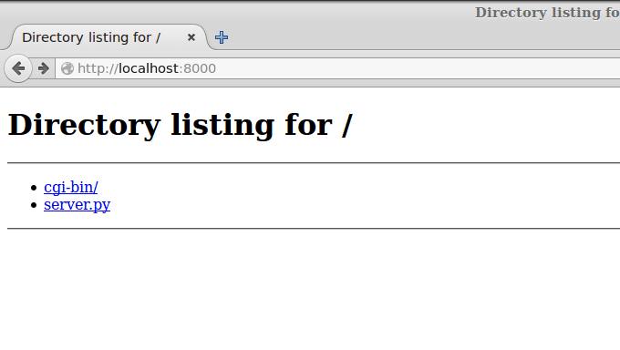

CGI: пишем простой сайт на Python. Часть 1: Hello world
Практический Python 3 для начинающих
Проще всего создать динамические страницы на Python при помощи CGI-скриптов. CGI-скрипты - это исполняемые файлы, которые выполняются веб-сервером, когда в URL запрашивается соответствующий скрипт.
Сегодня я расскажу про то, как написать Hello world, как CGI-скрипт.
В Python уже есть встроенный CGI сервер, поэтому его настройка элементарна.
Для запуска из консоли (для любителей linux-систем). Запускать нужно из той папки, где мы хотим работать:
python3 -m http.server --cgi
Для сидящих на Windows чуть проще будет запуск Python файла (заметьте, что он должен находиться в той же папке, в которой мы планируем работать!):
from http.server import HTTPServer, CGIHTTPRequestHandler
server_address = ("", 8000)
httpd = HTTPServer(server_address, CGIHTTPRequestHandler)
httpd.serve_forever()
Теперь откройте браузер и в адресной строке наберите localhost:8000
Если у вас примерно такая же картина, значит, у вас все заработало!

Теперь в той папке, где мы запустили сервер, создаём папку cgi-bin (у меня она уже создана).
В этой папке создаём скрипт hello.py со следующим содержимым:
#!/usr/bin/env python3
print("Content-type: text/html")
print()
print("<h1>Hello world!</h1>")
Первая строка говорит о том, что это Python скрипт (CGI-скрипты можно не только на Python писать).
Вторая строка печатает заголовок. Он обозначает, что это будет html файл (бывает ещё css, javascript, pdf и куча других, и браузер различает их по заголовкам).
Третья строка (просто символ новой строки) отделяет заголовки от тела ответа.
Четвёртая печатает Hello world.
Теперь переходим на localhost:8000/cgi-bin/hello.py
И радуемся!
Если у вас не работает, проверьте, установлены ли права на выполнение.
Также в консоли запущенного сервера появляются сообщения об ошибках. Например, убрал скобочку и обновил страницу:
В следующей части мы рассмотрим обработку данных форм и cookies.